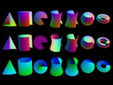

TIFF Tools Overview¶
{kind=link}

This software distribution comes with a small collection of programs for converting non-TIFF format images to TIFF and for manipulating and interrogating the contents of TIFF images. Several of these tools are useful in their own right. Many of them however are more intended to serve as programming examples for using the TIFF library.
Manual pages¶
Device-dependent Programs¶
There are two device-dependent programs that serve as simple examples for writing programs to display and save TIFF images.
Tool |
Description |
|---|---|
Display the contents of one or more TIFF images using OpenGL.
The software makes extensive use of the |
Device-independent Programs¶
The remaining programs should be device-independent:
Tool |
Description |
|---|---|
Convert a Group 3- or Group 4- compressed TIFF to PostScript that is significantly more compressed than is generated by tiff2ps (unless tiff2ps writes PS Level II) |
|
Convert raw Group 3 or Group 4 facsimile data to TIFF |
|
Convert a Palette-style image to a full color RGB image by applying the colormap |
|
A quick hack that converts 8-bit PPM format images to TIFF |
|
Create a TIFF file from raw data |
|
Convert an RGB, grayscale, or bilevel TIFF image to a YCbCr TIFF image; it's mainly provided for testing |
|
Copy a bilevel TIFF to one that includes 8-bit greyscale
"thumbnail images" for each page; it is provided as an example of
how one might use the |
|
A simple program to convert a color image to grayscale |
|
Convert TIFF images to PDF |
|
Convert TIFF images to PostScript |
|
Convert a TIFF image to RGBA color space |
|
Compare the contents of two TIFF files (it does not check all the directory information, but does check all the data) |
|
Copy, concatenate, and convert TIFF images (e.g. switching from
|
|
Provides selection of images from within one or more multi-image TIFF files, with orthogonal rotation, mirroring, cropping, and extraction of multiple sections and exporting to one or more files. It extends the functionality of tiffcp to support additional bit depths in strips and tiles and enhances the selection capabilities of tiffsplit. Bilevel images can be inverted and images may be split into segments to fit on multiple /pages/ (standard paper sizes), plus other functions described in the tiffcrop man page |
|
Dither a b&w image into a bilevel image (suitable for use in creating fax files) |
|
Display the verbatim contents of the TIFF directory in a file (it's very useful for debugging bogus files that you may get from someone that claims they support TIFF) |
|
Display information about one or more TIFF files |
|
A version of Paul Heckbert's median cut program that reads an RGB TIFF image, and creates a TIFF palette file as a result |
|
Set a field in a TIFF header |
|
Create one or more single-image files from a (possibly) multi-image file |
Check out the manual pages for details about the above programs.